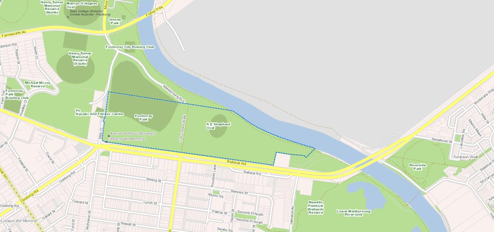

Easy Fried Rice
Ingredients:
- 3 tablespoons butter, divided
- 2 eggs, whisked
- 2 medium carrots, peeled and diced
- 1 small white onion, diced
- 1/2 cup frozen peas
- 3 cloves garlic, minced
- salt and black pepper
- 4 cups cooked and chilled rice
- 3 green onions, thinly sliced
- 3–4 tablespoons soy sauce, to taste
- 2 teaspoons oyster sauce (optional)
- 1/2 teaspoons toasted sesame oil
Instructions:
- Heat 1/2 tablespoon of butter in a large sauté pan* over medium-high heat until melted. Add egg, and cook until scrambled, stirring occasionally. Remove egg, and transfer to a separate plate.
- Add an additional 1 tablespoon butter to the pan and heat until melted. Add carrots, onion, peas and garlic, and season with a generous pinch of salt and pepper. Sauté for about 5 minutes or until the onion and carrots are soft. Increase heat to high, add in the remaining 1 1/2 tablespoons of butter, and stir until melted.
- Immediately add the rice, green onions, soy sauce and oyster sauce (if using), and stir until combined. Continue sautéing for an extra 3 minutes to fry the rice, stirring occasionally. (I like to let the rice rest for a bit between stirs so that it can crisp up on the bottom.) Then add in the eggs and stir to combine. Remove from heat, and stir in the sesame oil until combined.
- Serve immediately, or refrigerate in a sealed container for up to 3 days
2
Ready To Go?
Decide a meeting location to exchange meals with your match in the chat below!
Enter your meeting location below:
Please be sure to:
- Wear a mask covering your nose and chin
- Wash hands before and after handling food
- Socially distance from your match, at least 6 feet
Select one of the following:
- Picnic (weather permitting)
- Exchange food and video chat at home